Growth
the net growth of the plants is modelled by...
- the potential growth! that is multiplied by some growth reducer functions and a belowground competition function, these processes are included in the main function
Growth.growth! - Leaf senescence
- Agricultural defoliation
RegionalGrasslandSim.Growth.growth! — Functiongrowth!(; t, p, calc, biomass, WR)Calculates the actual growth of the plant species.
Potential growth
RegionalGrasslandSim.Growth.potential_growth! — Functionpotential_growth!(; calc, SLA, biomass, PAR, potgrowth_included)Calculates the potential growth of all plant species in a specific patch.
This function is called each time step (day) for each patch. The PAR value is the photosynthetically active radiation of the day.
First, the leaf area indices of all species are calculated (see Growth.calculate_LAI). Then, the total leaf area is computed. An inverse exponential function is used to calculate the total primary production:
\[\text{totalgrowth} = PAR \cdot RUE_{max} \cdot (1 - \text{exp}(-\alpha \cdot \text{LAItot}))\]
This primary production is then multiplied with the share of the leaf area index of the individual species
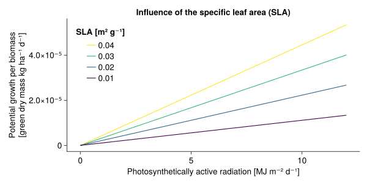
RegionalGrasslandSim.Growth.calculate_LAI — Functioncalculate_LAI(; SLA, biomass, LAIs)Calculate the leaf area index of all species of one habitat patch.
\[\begin{align} \text{LAI} &= \text{SLA} \cdot \text{biomass} \cdot \text{LAM} \\ \text{LAI}_{\text{tot}} &= \sum \text{LAI} \end{align}\]
SLAspecific leaf area [m² g⁻¹]LAMProportion of laminae in green biomass [unitless], the value 0.62 is derived by [1]biomass[kg ha⁻¹]
There is a unit conversion from the SLA and the biomass to the unitless LAI involved.
The array LAIs is mutated inplace.
Reducer functions
The growth of each plant species in each patch is dependent on...
- ☀ the photosynthetically active radiation
Growth.radiation_reduction - the height of the plants in relation to the community weighted mean height
Growth.height_influence! - 🌡 the air temperature
Growth.temperature_reduction - 💧 the soil water content
- the plant-available nutrients
- 📈 a seasonal effect, that is modelled by the accumulated degree days
Growth.seasonal_reduction
RegionalGrasslandSim.Growth.radiation_reduction — Functionradiation_reduction(; PAR, radiation_red)Reduction of radiation use efficiency at light intensities higher than 5 $MJ\cdot m^{-2}\cdot d^{-1}$
\[\text{Rred} = \text{min}(1, 1-\gamma_1(\text{PAR}(t) - \gamma_2))\]
The equations and the parameter values are taken from [2].
γ₁is the empirical parameter for a decrease in RUE for high PAR values, here set to 0.0445 [m² d MJ⁻¹]γ₂is the threshold value of PAR from which starts a linear decrease in RUE, here set to 5 [MJ m⁻² d⁻¹]
comment to the equation/figure: PAR values are usually between 0 and 15 $MJ\cdot m^{-2}\cdot d^{-1}$ and therefore negative values of Rred are very unlikely 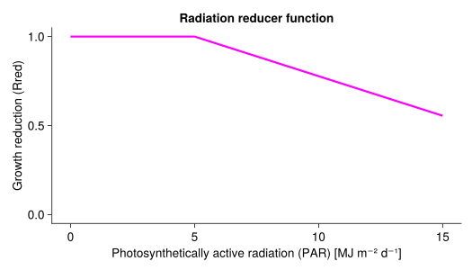
RegionalGrasslandSim.Growth.height_influence! — Functionheight_influence!(;
calc, biomass, height, height_included, height_strength)\[\text{heightinfluence} = 1 + \frac{\text{height}\cdot\text{height}_{\text{strength}}}{\text{height}_{\text{cwm}}} -\text{height}_{\text{strength}}\]
height_strengthlies between 0 (no influence) and 1 (strong influence of the plant height)- the community weighted mean height
height_cwmis calculated byGrowth.community_weighted_mean_height
In these plots all three plant species have an equal biomass: 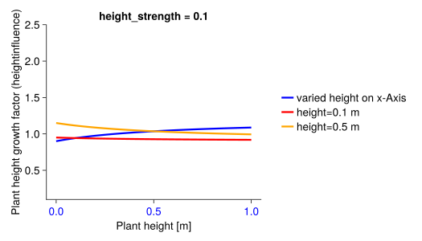 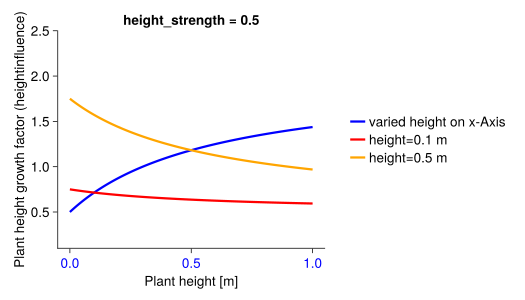
RegionalGrasslandSim.Growth.community_weighted_mean_height — Functioncommunity_weighted_mean_height(; calc, biomass, height)\[\text{height}_{\text{cwm}} = \frac{\sum \text{biomass} \cdot \text{height}}{\sum \text{biomass}}\]
RegionalGrasslandSim.Growth.temperature_reduction — Functiontemperature_reduction(; T, temperature_red)Reduction of the potential growth if the temperature is low or too high with a step function.
\[\text{temperature_reduction}(T) = \begin{cases} 0 & \text{if } T < T_0 \\ \frac{T - T_0}{T_1 - T_0} & \text{if } T_0 < T < T_1 \\ 1 & \text{if } T_1 < T < T_2 \\ \frac{T_3 - T}{T_3 - T_2} & \text{if } T_2 < T < T_3 \\ 0 & \text{if } T > T_3 \\ \end{cases}\]
Equations are taken from [3] and theses are based on [2]. T₁ is in [3] a species specific parameter, but here it is set to 12°C for all species.
T₀is the lower temperature threshold for growth, here set to 3°CT₁is the lower bound for the optimal temperature for growth, here set to 12°CT₂is the upper bound for the optiomal temperature for growth, here set to 20°CT₃is the maximum temperature for growth, here set to 35°C
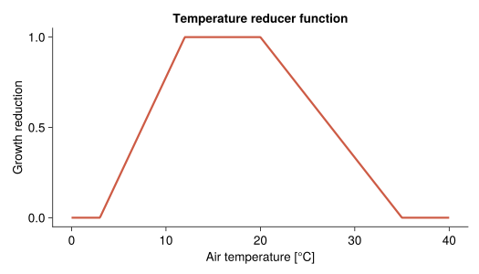
RegionalGrasslandSim.Growth.water_reduction! — Functionwater_reduction!(;
calc,
fun_response,
WR,
water_red,
PET,
PWP,
WHC)See for details: Water stress
RegionalGrasslandSim.Growth.nutrient_reduction! — Functionnutrient_reduction!(;
calc,
fun_response,
nutrient_red,
nutrients)See for details: Nutrient stress
RegionalGrasslandSim.Growth.seasonal_reduction — Functionseasonal_reduction(; ST, season_red)Reduction of growth due to seasonal effects. The function is based on the yearly cumulative sum of the daily mean temperatures (ST).
\[\text{seasonal}(ST) = \begin{cases} SEA_{min} & \text{if } ST < 200 \\ SEAₘᵢₙ + (SEAₘₐₓ - SEAₘᵢₙ) * \frac{ST - 200}{ST₁ - 400} & \text{if } 200 < ST < ST₁ - 200 \\ SEA_{max} & \text{if } ST₁ - 200 < ST < ST₁ - 100 \\ SEAₘᵢₙ + (SEAₘᵢₙ - SEAₘₐₓ) * \frac{ST - ST₂}{ST₂ - ST₁ - 100} & \text{if } ST₁ - 100 < ST < ST₂ \\ SEA_{min} & \text{if } ST > ST₂ \\ \end{cases}\]
This empirical function was developed by [1]. In contrast to [1] SEAₘᵢₙ, SEAₘₐₓ, ST₁ and ST₂ are not species specific parameters, but are fixed for all species. The values of the parameters are based on [1] and were chosen to resemble the mean of all functional groups that were described there.
A seasonal factor greater than one means that growth is increased by the use of already stored resources. A seasonal factor below one means that growth is reduced as the plant stores resources [1].
STis the yearly cumulative sum of the daily mean temperaturesSEAₘᵢₙis the minimum value of the seasonal effect, here set to 0.67 [-]SEAₘₐₓis the maximum value of the seasonal effect, here set to 1.33 [-]ST₁andST₂are parameters that describe the thresholds of the step function, here set to 625 and 1300 [°C d]
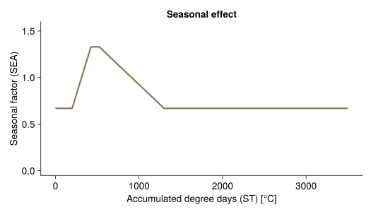
–
Below-ground competition
RegionalGrasslandSim.Growth.below_ground_competition! — Functionbelow_ground_competition!(;
below,
traitsimilarity_biomass,
biomass, below_included,
trait_similarity,
below_competition_strength)Models the below-ground competiton between plant.
Plant growth is reduced if a large biomass of plant species with similar functional traits is already present. The below_competition factor has a value between 0 and 1. For plant species $i$ with $N$ plant species present it is defined as follows:
\[\text{below_competition}_i = exp\left(-\frac{\text{below_competition_strength}}{1000} \cdot \left[\sum_{u=1}^{u=N} \text{trait_similarity}_{i,u} \cdot \text{biomass}_u\right] \right)\]
The below_competition_strength can therefore be seen as a parameter that controls the density dependence.
The trait_similarity is computed before the start of the simulation (calculation of traits similarity). and includes the traits arbuscular mycorrhizal colonisation rate (AMC) and the root surface area devided by the above ground biomass (SRSA_above).
Leaf senescence
RegionalGrasslandSim.Growth.senescence! — Functionsenescence!(; sen, ST, biomass, μ)\[\begin{align} LL &= 10 ^ { \left(log10(SLA) - 2.41\right) / -0.38} \cdot\frac{365.25}{12} \\ μ &= \frac{\text{sen_intercept}}{1000} + \frac{\text{sen_rate}}{1000} \cdot \frac{1}{LL} \\ \text{senescence} &= μ \cdot \text{SEN} \cdot \text{biomass} \end{align}\]
- LL leaf life span [$d$]
- SLA specific leaf area [$\frac{cm^2}{g}$] $\rightarrow$ this includes a unit conversion of the SLA values (in the model the unit of SLA is $\frac{m^2}{g}$)
- μ leaf senescence rate [$\frac{1}{d}$]
- SEN seasonal component of the senescence (between 1 and 3)
- sen_intercept α value of a linear equation that models the influence of the leaf senescence rate μ on the total senescence rate
- sen_rate β value of a linear equation that models the influence of the leaf senescence rate μ on the total senescence rate
The parameters $\text{sen_intercept}$ and $\text{sen_rate}$ were divided by 1000 to avoid very low numbers.
RegionalGrasslandSim.Growth.seasonal_component_senescence — Functionseasonal_component_senescence(;
ST,
Ψ₁ = 775,
Ψ₂ = 3000,
SENₘᵢₙ = 1,
SENₘₐₓ = 3)Seasonal factor for the senescence rate.
\[\begin{align*} SEN &= \begin{cases} SEN_{min} & \text{if} \;\; ST < Ψ_1 \\ SEN_{min}+(SEN_{max} - SEN_{min}) \frac{ST - Ψ_1}{Ψ_2 - Ψ_1} & \text{if}\;\; Ψ_1 < ST < Ψ_2 \\ SEN_{max} & \text{if}\;\; ST > Ψ_2 \end{cases} \\ \\ \end{align*}\]
- ST yearly accumulated degree days [$°C$]
- $Ψ₁=775$ [$°C\cdot d$]
- $Ψ₂=3000$ [$°C\cdot d$]
- $SEN_{min}=1$
- $SEN_{max}=3$
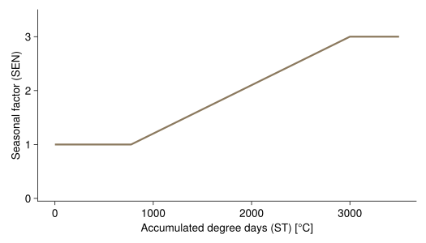
Agricultural defoliation
Biomass is removed by...
RegionalGrasslandSim.Growth.grazing_parameter — Functiongrazing_parameter(; LNCM, leafnitrogen_graz_exp)Initialize the grazing parameter ρ.
\[\rho = \left(\frac{LNCM}{\overline{LNCM}}\right) ^ {\text{leafnitrogen_graz_exp}}\]
LNCMleaf nitrogen per leaf massleafnitrogen_graz_expexponent of the leaf nitrogen per leaf mass in the grazing parameterρappetence of the plant species for livestock, dependent on nitrogen per leaf mass (LNCM) [dimensionless]
The function is excetued once at the start of the simulation. The grazing parameter ρ is used in the function Growth.grazing!.
RegionalGrasslandSim.Growth.grazing! — Functiongrazing!(; calc, LD, biomass, ρ, grazing_half_factor)\[\begin{align} μₘₐₓ &= κ \cdot \text{LD} \\ h &= \frac{1}{μₘₐₓ} \\ a &= \frac{1}{\text{grazing_half_factor}^2 \cdot h} \\ \text{totgraz} &= \frac{a \cdot (\sum \text{biomass})^2} {1 + a\cdot h\cdot (\sum \text{biomass})^2} \\ \text{share} &= \frac{ \rho \cdot \text{biomass}} {\sum \left[ \rho \cdot \text{biomass} \right]} \\ \text{graz} &= \text{share} \cdot \text{totgraz} \end{align}\]
LDdaily livestock density [livestock units ha⁻¹]κdaily consumption of one livestock unit [kg d⁻¹], follows [4]ρappetence of the plant species for livestock, dependent on nitrogen per leaf mass (LNCM) [dimensionless], initiliazed by the functionGrowth.grazing_parametergrazing_half_factoris the half-saturation constant [kg ha⁻¹]- equation partly based on [3]
Influence of grazing (livestock density = 2), all plant species have an equal amount of biomass (total biomass / 3) and a leaf nitrogen content of 15, 30 and 40 mg/g:
leafnitrogen_graz_exp= 1.5
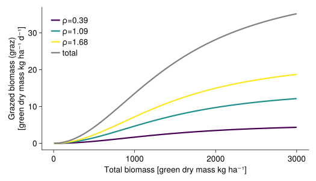
leafnitrogen_graz_exp= 5
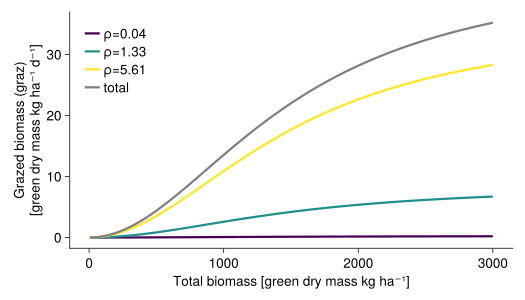
Influence of grazing_half_factor: 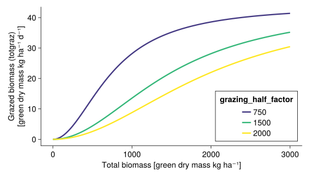
RegionalGrasslandSim.Growth.mowing! — Functionmowing!(;
calc,
mowing_height,
days_since_last_mowing,
height,
biomass,
mowing_mid_days)\[\begin{align} \lambda &= \frac{\text{mown_height}}{\text{height}}\\ \text{mow_factor} &= \frac{1}{1+exp(-0.1*(\text{days_since_last_mowing} - \text{mowing_mid_days})}\\ \text{mow} &= \lambda \cdot \text{biomass} \end{align}\]
The mow_factor has been included to account for the fact that less biomass is mown when the last mowing event was not long ago. Influence of mowing for plant species with different heights ($height$): 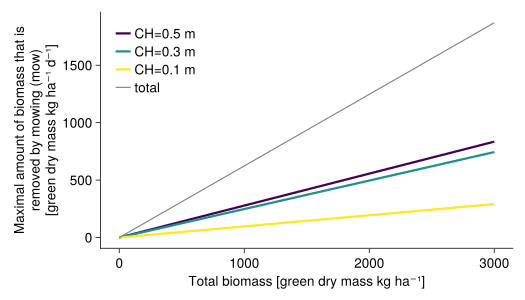
Visualisation of the mow_factor: 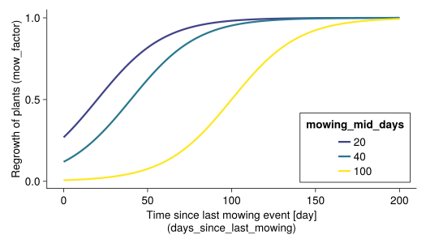
RegionalGrasslandSim.Growth.trampling_parameter — Functiontrampling_parameter(; trampling_factor)Intialize the trampling factor.
To avoid a very small trampling factor for paramter inference, the trampling factor is divided by 10000 and the unit [ha m⁻¹] is added.
The trampling_factor is used in the function Growth.trampling!.
RegionalGrasslandSim.Growth.trampling! — Functiontrampling!(; calc, LD, biomass, height, trampling_factor)\[\begin{align} \text{trampled_proportion} &= \text{height} \cdot \text{LD} \cdot \text{trampling_factor} \\ \text{trampled_biomass} &= \begin{cases} \text{biomass} \cdot \text{trampled_proportion}, & \text{if trampled_proportion} < 1 \\ \text{biomass}, & \text{if trampled_proportion} > 1 \\ \end{cases} \end{align}\]
It is assumed that tall plants (trait: height) are stronger affected by trampling. A linear function is used to model the influence of trampling.
Maximal the whole biomass of a plant species is removed by trampling.
- biomass [$\frac{kg}{ha}$]
- LD daily livestock density [$\frac{\text{livestock units}}{ha}$]
- tramplingfactor [$ha$], this parameter is initiliazed with the function [`Growth.tramplingparameter`](@ref)
- height canopy height [$m$]
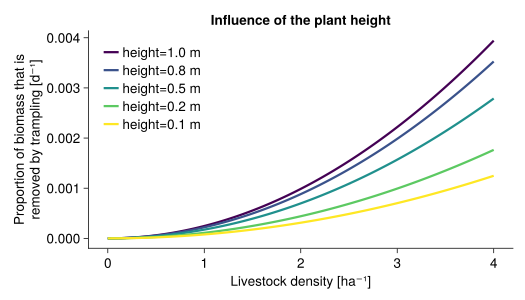